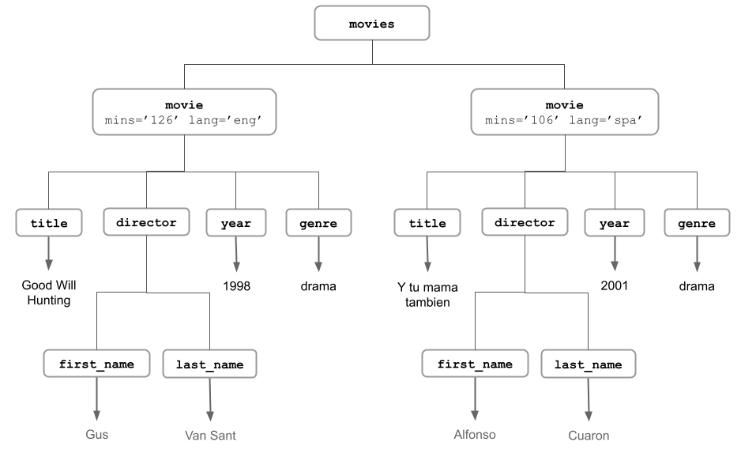
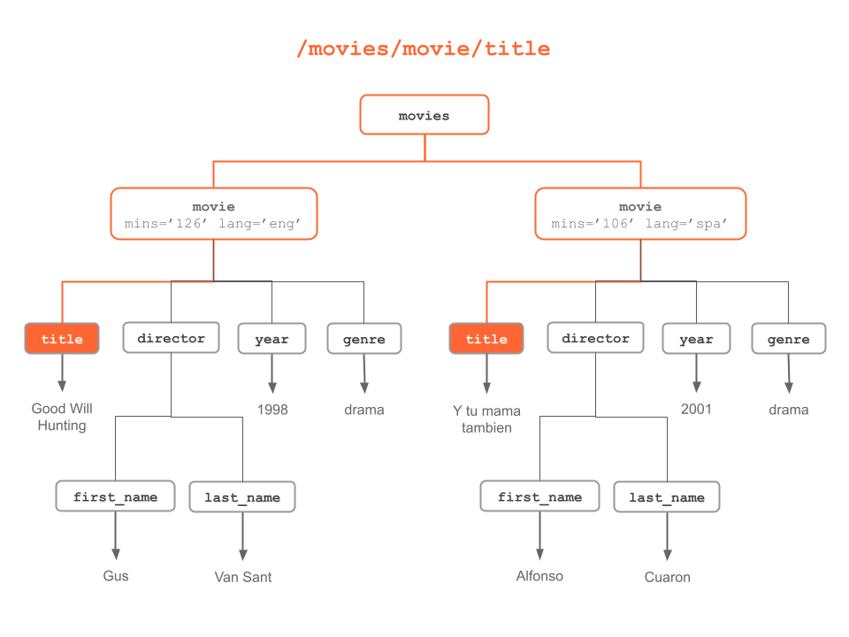
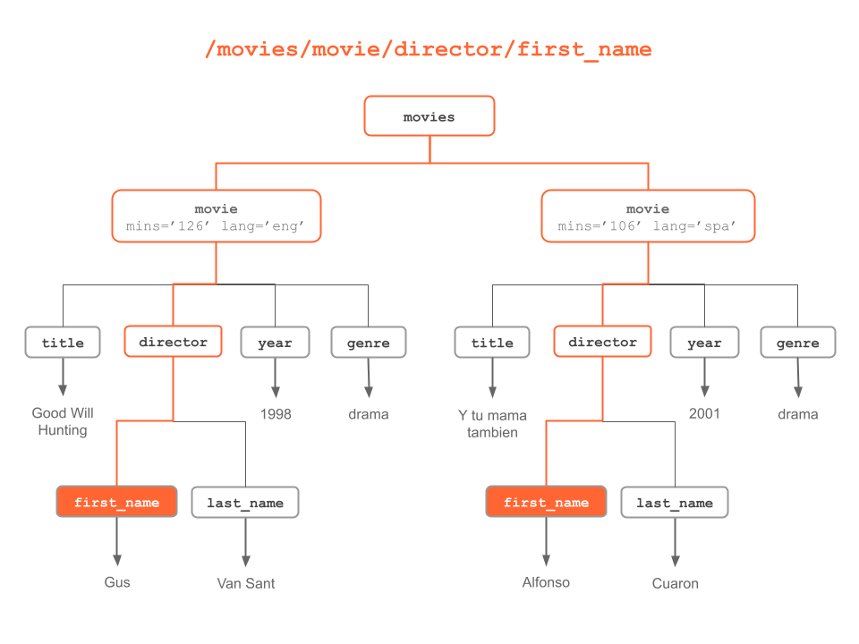
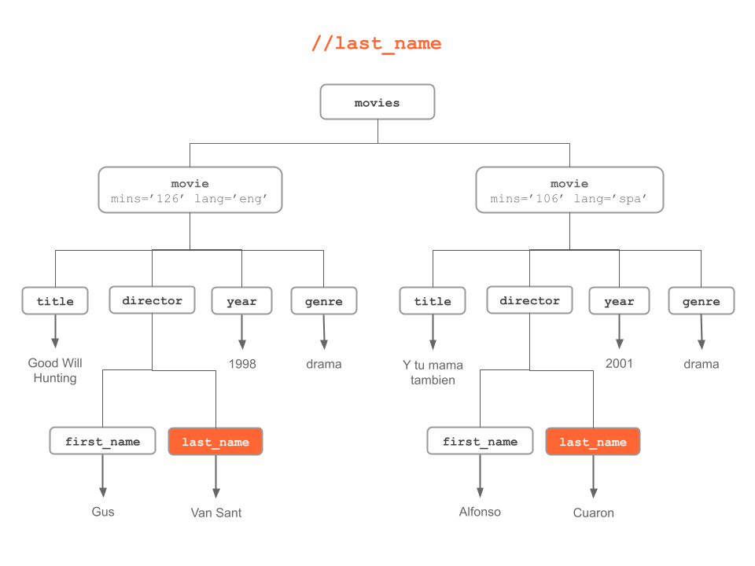
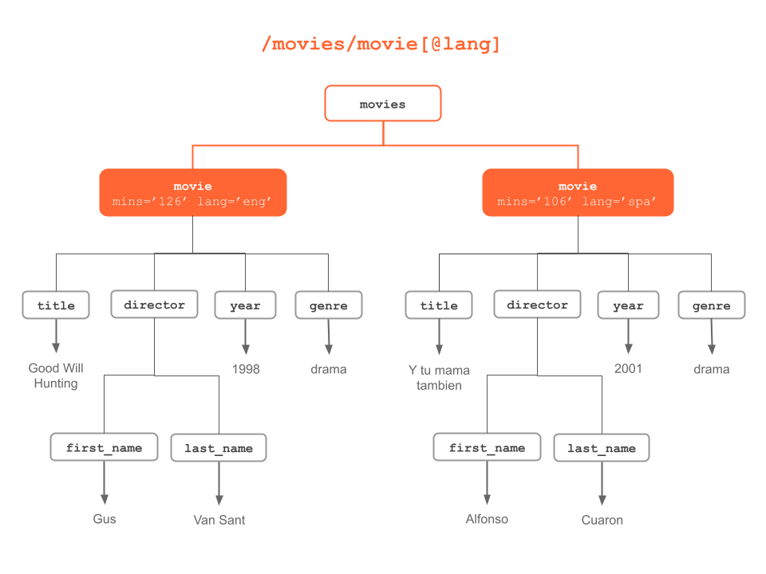
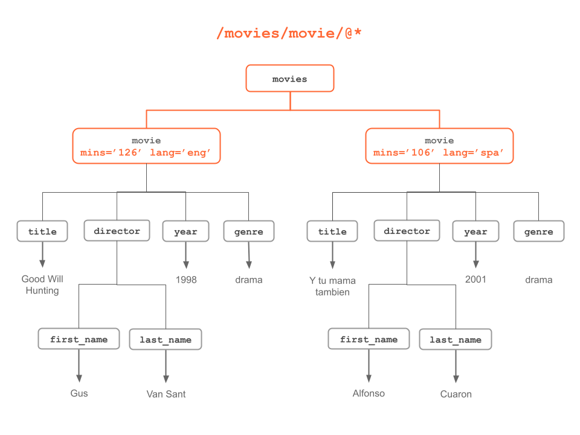

6 XPath Language
In the preceding chapter you learned about the main functions in "xml" that allows us to parse XML and HTML documents. While those functions can be quite useful to navigate through the elements of an XML document, their default usage can be a bit limiting.
The real parsing power comes from the ability to locate nodes and extract information from them. For this, we need to be able to perform queries on the parsed content. The solution is provided by XPath, which is a language to navigate through elements and attributes in an XML/HTML document.
6.1 What is XPath?
XPath is a language for finding information in an XML document. It works by identifying patterns to match data or content. To be more precise, XPath uses path expressions to select nodes in an XML document by taking into account the tree structure of XML based on:
node names
node content
a node’s relationship to other nodes
6.1.1 XPath Syntax
The key concept is knowing how to write XPath expressions. XPath expressions have a syntax similar to the way files are located in a hierarchy of directories and folders in a computer file system. For instance:
/movies/movieis the XPath expression to locate the movie children in the movies (root) element
6.1.2 Selecting Nodes
The main symbols to define path expressions are:
| Symbol | Description |
|---|---|
/ |
selects from the root node |
// |
selects nodes anywhere |
. |
selects the current node |
.. |
selects the parent of the current node |
@ |
selects attributes |
[] |
square brackets to indicate attributes |
* |
matches any element node |
@* |
matches any attribute node |
For instance:
| Example | Description |
|---|---|
/node |
selects top level node |
//node |
selects nodes at any level |
node[@attr] |
node that has an attribute named attr |
node[@attr="abc"] |
node that has an attribute named attr with value "abc" |
node/@attr |
value of an attribute attr in node with such attribute |
node/* |
any (child) element in node |
node/@* |
value of any attribute in node |
6.2 XPath Examples
To make things less abstract, let’s bring back the movies XML document containing two movies Good Will Hunting and Y tu mama tambien
The following diagrams illustrate different XPath expressions to match and select nodes based on either: their names, their content, or their relationship to other nodes.











6.3 Using XPath Functions
The R package "xml2" provides a large number of functions that admit XPath expressions; these functions have the xpath argument. The following code snippets, based on the above pattern examples, show you how to use some of these functions.
# toy example with xml string
xml_string <- c(
'<?xml version="1.0" encoding="UTF-8"?>',
'<movies>',
'<movie mins="126" lang="eng">',
'<title>Good Will Hunting</title>',
'<director>',
'<first_name>Gus</first_name>',
'<last_name>Van Sant</last_name>',
'</director>',
'<year>1998</year>',
'<genre>drama</genre>',
'</movie>',
'<movie mins="106" lang="spa">',
'<title>Y tu mama tambien</title>',
'<director>',
'<first_name>Alfonso</first_name>',
'<last_name>Cuaron</last_name>',
'</director>',
'<year>2001</year>',
'<genre>drama</genre>',
'</movie>',
'</movies>')
# parsing xml string
doc = read_xml(paste(xml_string, collapse = ''))# movie children (from root node)
movie_nodes = xml_find_all(doc, xpath = "/movies/movie")
movie_nodes{xml_nodeset (2)}
[1] <movie mins="126" lang="eng">\n <title>Good Will Hunting</title>\n <dir ...
[2] <movie mins="106" lang="spa">\n <title>Y tu mama tambien</title>\n <dir ...# title children (from root node)
title_nodes = xml_find_all(doc, xpath = "/movies/movie/title")
title_nodes{xml_nodeset (2)}
[1] <title>Good Will Hunting</title>
[2] <title>Y tu mama tambien</title># text content of title_nodes
xml_text(title_nodes)[1] "Good Will Hunting" "Y tu mama tambien"# director children (from any movie element)
director_nodes = xml_find_all(doc, "//movie/director")
director_nodes{xml_nodeset (2)}
[1] <director>\n <first_name>Gus</first_name>\n <last_name>Van Sant</last_n ...
[2] <director>\n <first_name>Alfonso</first_name>\n <last_name>Cuaron</last ...# text content of director_nodes
xml_text(director_nodes)[1] "GusVan Sant" "AlfonsoCuaron"# last_name (from anywhere in the tree)
last_name_nodes = xml_find_all(doc, "//last_name")
last_name_nodes{xml_nodeset (2)}
[1] <last_name>Van Sant</last_name>
[2] <last_name>Cuaron</last_name># text of last_name (from anywhere in the tree)
xml_text(last_name_nodes)[1] "Van Sant" "Cuaron" # title node of movie with attribute lang='spa'
title_spa = xml_find_all(doc, "/movies/movie[@lang='spa']/title")
title_spa{xml_nodeset (1)}
[1] <title>Y tu mama tambien</title># text content of title_spa
xml_text(title_spa)[1] "Y tu mama tambien"